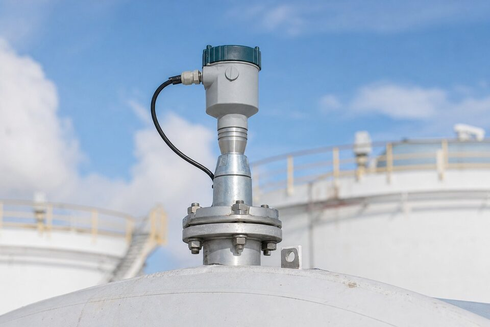

چرا 80 گیگاهرتز؟
در اندازهگیری سطح با رادار، فرکانس مستقیماً بر الگوی پرتو اثر میگذارد: هرچه فرکانس بالاتر باشد، برای یک آنتن مشخص، پرتو باریکتر میشود. رادارهای قدیمی 6 یا 26 گیگاهرتز، پرتوی بازی داشتند که در مخازن کوچک و پر از موانع داخلی، به دیوارهها، لولهها و همزنها برخورد کرده و اکوهای کاذب ایجاد میکرد. فرکانس 80 گیگاهرتز این مشکل را به طور قابل توجهی کاهش داده است: پرتو آنقدر باریک است که از میان موانع عبور کرده و مستقیم به سطح سیال میرسد؛ نتیجه، راهاندازی سادهتر و اندازهگیری پایدارتر در شرایطی است که قبلاً رادار در آنها ناکام میماند.

مزایای عملی
- اندازهگیری بدون تماس و مستقل از چگالی، دما و فشار سیال.
- پرتو باریک و مناسب مخازن کوچک، بلند و پرمانع.
- آنتن کوچک با نازل کوتاه؛ نصب در فضاهای محدود.
- پایداری بلندمدت بالا و نیاز کم به کالیبراسیون.
- پوشش طیف وسیعی از مایعات و حتی برخی جامدات.
محدودیتها و نکات فنی
با همه مزایا، رادار 80 گیگاهرتز نیز محدودیتهایی دارد. سیالهایی که ثابت دیالکتریک بسیار پایینی دارند (مانند برخی هیدروکربنهای سبک)، اکوی ضعیفی تولید میکنند و ممکن است به فناوریهای دیگر یا طرحهای تماسی نیاز باشد. کف، بخار غلیظ و اغتشاش شدید سطح نیز میتواند خوانش را تحت تاثیر قرار دهد. جنس و شکل آنتن باید متناسب سیال انتخاب شود؛ در سیالهای چسبنده، آنتنهای با طراحی ضدچسبندگی یا پایش تمیزی آنتن در برنامه نگهداری لازم است. در نهایت، تحلیل اکو و راهاندازی صحیح، نیمی از موفقیت اندازهگیری راداری است.
نصب و راهاندازی
محل نصب آنتن باید از ورودی سیال، همزن و دیوارههای نزدیک فاصله داشته باشد؛ هرچه پرتو مسیر پاکتری داشته باشد، سیگنال تمیزتر است. نازل مخزن نیز باید کوتاه و بدون لبه باشد تا اکوی کاذب ایجاد نکند. پس از نصب، ابزار راهاندازی نرمافزاری برای ثبت اکوهای ثابت موانع و تنظیم منحنی استفاده میشود. ثبت اکوی مرجع در شرایط خالی و پر، عیبیابیهای آینده را بسیار ساده میکند و باید در مدارک راهاندازی بایگانی گردد.
معیارهای استعلام
در استعلام ترانسمیتر راداری، ابعاد و شکل مخزن، جنس دیواره، سیال و دمای کاری، فشار مخزن، وجود موانع داخلی و محدوده اندازهگیری موردنیاز را ذکر کنید. اگر سیال ثابت دیالکتریک پایینی دارد، حتماً اعلام کنید تا امکانسنجی اکو انجام شود. خروجی و پروتکل ارتباطی، الزامات ناحیه خطر و نوع اتصال نیز از دیگر پارامترهای ضروری است. مدارک کالیبراسیون و تاییدیهها نیز مطابق الزامات پروژه تحویل میشود.
عیبیابی و پایداری اندازهگیری رادار
رادارهای فرکانس بالا تجهیزاتی قابل اتکا هستند، اما الگوی مشکلات شناختهشدهای دارند که آشنایی با آنها زمان عیبیابی را کوتاه میکند. شایعترین مشکل، اکوهای کاذب ناشی از اجزای داخلی مخزن است: نردبانها، همزنها، لولههای ورودی و حتی جوشهای برجسته میتوانند بازتاب ایجاد کنند و خوانش را در بخشهایی از رنج مخدوش سازند. بسیاری از ترانسمیترهای جدید امکان نقشهبرداری اکو و سرکوب اکوهای کاذب را دارند که باید در راهاندازی اولیه با دقت انجام شود، نه پس از شکایت بهرهبردار. مشکل دوم، چگالش یا رسوب روی آنتن است؛ در بخارات چسبنده یا غبارآلود، پوشش سطح آنتن سیگنال را تضعیف میکند و خوانش به تدریج غیرقابل اتکا میشود. در این سرویسها، انتخاب آنتن مناسب، نصب با زاویه صحیح یا استفاده از نسخههای خودتمیزشونده و برنامه تمیزکاری دورهای اهمیت پیدا میکند. سوم، تغییر شرایط فرایند مانند کفکردن سطح یا تغییر ثابت دیالکتریک سیال است که ذات اندازهگیری را تحت تاثیر قرار میدهد و باید در انتخاب اولیه دیده شود. در عیبیابی، همیشه ابتدا نصب و پیکربندی را بازبینی کنید: موقعیت نصب، پارامترهای مخزن واردشده و تنظیمات سرکوب اکو؛ تجربه نشان میدهد بخش بزرگی از مشکلات ظاهری رادار، ریشه در همین سه نقطه دارد. پایش روند سیگنال و کیفیت اکو در طول زمان نیز شاخص زودهنگام مناسبی برای تشخیص تدریجی مشکلات است و در ترانسمیترهای پیشرفته به صورت آماده در دسترس است.
جمعبندی
رادار 80 گیگاهرتز، اندازهگیری سطح بدون تماس را به نقاطی رسانده که قبلاً غیرممکن به نظر میرسید: مخازن کوچک، نازلهای کوتاه و محیطهای پرمانع. با شناخت محدودیتهای اکو در سیالهای خاص و نصب صحیح، این فناوری یکی از پایدارترین روشهای اندازهگیری سطح در صنعت است.
سوالات رایج
چرا فرکانس 80 گیگاهرتز مهم است؟
فرکانس بالاتر یعنی آنتن کوچکتر و پرتو باریکتر؛ در نتیجه انرژی رادار به جای برخورد با دیوارهها و موانع داخلی، مستقیم به سطح سیال میرسد و اندازهگیری در مخازن کوچک و پرمانع ممکن میشود.
رادار تماسی و غیرتماسی چه تفاوتی دارند؟
رادارهای غیرتماسی از بالای مخزن و بدون تماس با سیال اندازهگیری میکنند؛ رادارهای تماسی امواج را در طول یک میله یا کابل هدایت میکنند. فرکانسهای بالا عمدتاً در طرحهای غیرتماسی استفاده میشوند.
کجا رادار به فشار و دما ترجیح داده میشود؟
هر جا خواص سیال (چگالی، دما، فشار) متغیر است یا اندازهگیری بدون تماس لازم است؛ رادار به این تغییرات حساس نیست و پایداری بلندمدت بالایی دارد.
مهمترین نکته نصب چیست؟
محل نصب آنتن باید به گونهای باشد که پرتو در مسیر خود مانع نداشته باشد؛ حتی با پرتو باریک 80 گیگاهرتز، نصب روی ورودی سیال یا نزدیک دیواره نامناسب است.
مطالب مرتبط
با ذکر ابعاد مخزن، سیال و شرایط فرایند، ترانسمیتر سطح راداری متناسب از برندهای معتبر عرضه میشود.
مشاهده صفحه محصول ← ثبت RFQ همین محصولتامین این تجهیزات را به پیشرو تجهیز فرتاک بسپارید
شرکت پیشرو تجهیز فرتاک تامینکننده تخصصی تجهیزات صنعتی برای پروژههای نفت، گاز، پتروشیمی، فولاد و نیروگاهی است. برای دریافت پیشنهاد فنی و قیمت، استعلام (RFQ) خود را ثبت کنید تا کارشناسان مهندسی فروش در کوتاهترین زمان پاسخ دهند.
- تامین ابزار دقیقترانسمیترها و آنالایزرهای برندهای معتبر
- تامین تجهیزات صنایع نفت و گازپکیج مواد مطابق وندورلیست